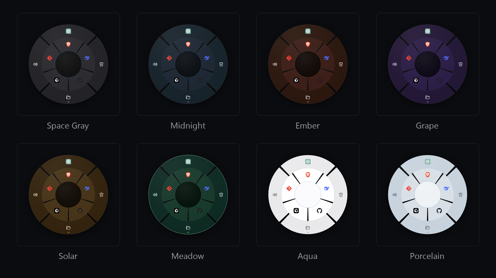

Up to 4 rings, live preview
Grow the wheel outward ring by ring. The Settings preview uses the exact same renderer as the real wheel — every edit shows instantly, with autosave and Undo.
Free · Open source · Windows 10/11
Nucleus is a polished, always-running radial launcher. Press a global hotkey and a crisp, animated wheel pops up at your mouse cursor — click a segment to launch apps, open URLs, run commands, replay keystroke macros, or trigger built-in Windows actions.
No account · No telemetry · No ads · MIT licensed. All releases
Speed and delight are both the point. The wheel must be faster than Alt+Tab — and it must feel like a rewarding object at your cursor, not a menu.
Grow the wheel outward ring by ring. The Settings preview uses the exact same renderer as the real wheel — every edit shows instantly, with autosave and Undo.
Apps, URLs, files, shell commands, macros, system actions, live setting toggles, branching folders, and a self-filling recent fan — one consistent model.
Chords, Unicode typing, waits, mouse clicks and scroll, holds
and repeats — straight through SendInput. Fully
bounded before a single event is injected.
Press, sweep across the wheel — folder fans branch as you pass — and release on a segment to fire it. Muscle memory in one gesture.
Summon the wheel and just start typing. Non-matching segments fade back, the best match is selected, Enter fires it — folder contents included.
A different wheel per app — up to 8 profiles take over when their program has focus. Gaming mode politely hides the wheel while a fullscreen game runs.
Switch output/input devices, master volume, and a per-app mixer — inside Settings and as a flyout card beside the wheel.
Settings live in %APPDATA%\Nucleus. No account, no
telemetry, no ads. The uninstaller keeps your config. MIT
licensed — build it yourself and compare.
| Type | Example | Note |
|---|---|---|
app |
notepad.exe |
Pick from the installed-programs dropdown — the segment wears the program's real icon |
url |
https://gmail.com |
Opens in your default browser |
file |
C:\Docs\notes.md |
Opens with its registered handler |
command |
taskkill /f /im foo.exe |
Detached shell command |
macro |
ctrl+c, wait=0.2, ctrl+v |
Real SendInput keys and mouse: type:,
hold=, repeat=,
scroll=
|
sys |
lock · mute ·
screenshot
|
Built-in Windows actions, incl. Wi-Fi, Bluetooth and audio-device switching |
setting |
toggle_game_mode |
Flips one Nucleus setting on the spot |
folder |
— | Sub-menu that branches outward on hover |
recent |
— | Self-filling fan of your most-used segments |
Hand-tuned dark and light themes, or mix your own colors — every
swatch is adjustable in Settings and saved to one
config.json.

Windows 10 / 11, 64-bit. The installer puts Nucleus in your tray — no admin rights, clean uninstall, your config survives.
Electron + vanilla web tech, with keystroke synthesis and system
actions straight to the Win32 API through user32.dll.
Read it, break it, fix it — MIT licensed, use it, modify it, share
it, even sell copies.